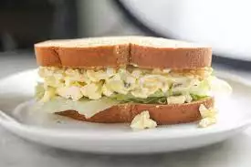

Delicious Egg Salad for Sandwiches

Description
This is a wonderful-tasting egg salad sandwich that you will definitely devour. It's really good on rye.
Ingredients
- 6 eggs
- 1/2 cup mayonnaise
- 1 teaspoon prepared yellow mustard
- 1/4 cup chopped green onion
- salt and pepper to taste
- 1/4 teaspoon paprika
- 1/4 teaspoon dried dill weed
Steps
- Place egg in a saucepan and cover with cold water. Bring water to a boil and immediately remove from heat. Cover and let eggs stand in hot water for 10 to 12 minutes. Remove from hot water, cool, peel and chop.
- Place the chopped eggs in a bowl, and stir in the mayonnaise, mustard and green onion. Season with salt, pepper, paprika and dill. Stir and serve on your favorite bread or crackers.
Back to home